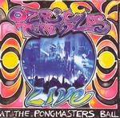

Home Artist links Label link

Ozric Tentacles - Live At The Pongmasters Ball
| Artist: | Ozric Tentacles |
| Title: | Live At The Pongmasters Ball |
| Label: | Snapper SMADD854 |
| Length(s): | 70+46 minutes |
| Year(s) of release: | 2002 |
| Month of review: | [09/2002] |
Line up
Ed - guitars, synths
Champignon - flutes
Seaweed - synths
Zia - bass
Rad - drum
Tracks
Disc 1:
| 1) | Oddentity | 11.17
|
| 2) | Erpland | 5.31
|
| 3) | Oakum | 8.24
|
| 4) | Myriapod | 11.10
|
| 5) | It's A Hup Ho World | 7.17
|
| 6) | Pixel Dream | 7.40
|
| 7) | The Domes Of G'Bal | 6.00
|
| 8) | Pyramidion | 12.15
|
Disc 2:
| 1) | Saucers | 8.19
|
| 2) | Dissolution | 12.30
|
| 3) | Sploosh | 7.11
|
| 4) | Ta Khut | 2.35
|
| 5) | Kick Muck | 5.18
|
| 6) | The Throbbe | 10.54
|
Summary
Not their first live album and probably not their last, this outfit
releases their umpteenth album. A DVD is in the making to celebrate twenty
years of the Ozrics.
The music
Well what can I say? This album typifies what Ozric Tentacles is about,
and maybe a bit more. You got your reggae rhythms intertwined with
flowing luxurious tapestries of keyboards, long guitar soli, peaceful
flute passages and both active and incidental percussion. Oddentity is
a good example of such a track, more than eleven minutes in length and a bit
more "spun out" then on the studio albums with fresh sounding guitar work
at a rather easy-going pace. The melodies are fine tho' and I never felt
like sleeping in (please, be warned that I review cd's when not under any
artificially induced influence). Erpland is way more active, especially
in the guitar department. From department to departure, because in Oakum we
end up in dream land. The vibrant Fender Rhodes, the jungle feel with the
sequencers setting in later getting all pacey, bubbly and jangly.
On Myriapod we get into up-beat territory with driven drums, sizzling keyboards
but also a break into something more peaceful along the way. The flute is
maybe a bit hesitant, but the guitar lends it its energy, while the drums drive
the whole thing home. I particularly love the drums here.
In It's A Hup Ho World, the keys are vibrant, the guitar sharp and etheric. A
rather raw sounding one, this. Pixel Dream is more up-beat and jam like with
weird meandering excursion on the keyboards. The drumming is nice and free.
The Domes Of G'Bal is a bit on the slow (lame?) side, but Pyramidion is
another price track with spaciness abounding (or unbounded), a bit in the
Hawkwind vein, urgent through the driven percussion. The middle part with
its reggae break sounds more meditative.
On disc two we only get six tracks: Saucers opens with Spanish guitar and an
Arabic melody. A bit one the slow side, but interesting enough because
of the variation within the track. I might compare this to walking around in
a Zoo. Nothing much happens, but then again you see all these weird and
interesting creatures. Dissolution is a slow starter, but a rousing track
in the long run. Gurgly water vocals on Sploosh, and again an Arabic tinge
to the melody. Ta Khut is short calm and flute dominated, the band starts to
kick muck in the next one. A real rock track. The Throbbe is announced as
being for world peace. A rather strange song this, gurgle rock one might call
it. The rhythm guitar comes in for the drive.
Conclusion
If you were ever in need of buying any Ozric Tentacles album, any at all,
then I am afraid you have come to the right address: this is it. The playing
and recording is flawless, the slection is good, typical for the band and
executed with a flair and finesse that is rare in space rock (many bands think
space rock is an excuse for muddling about). Yes, I am mighty pleased with this
one.
© Jurriaan Hage